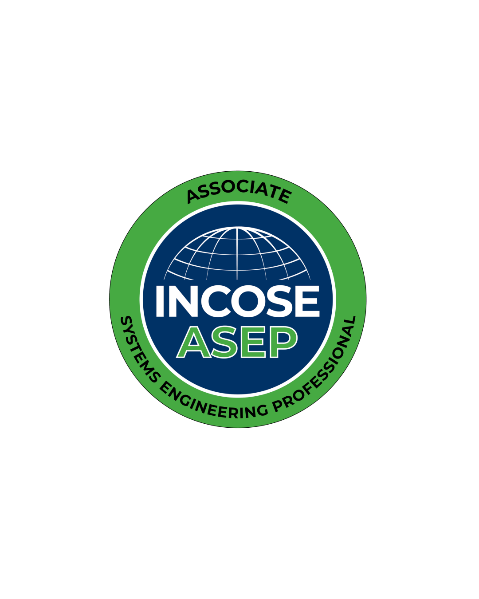
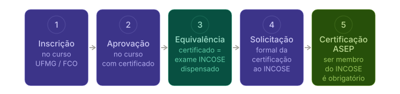
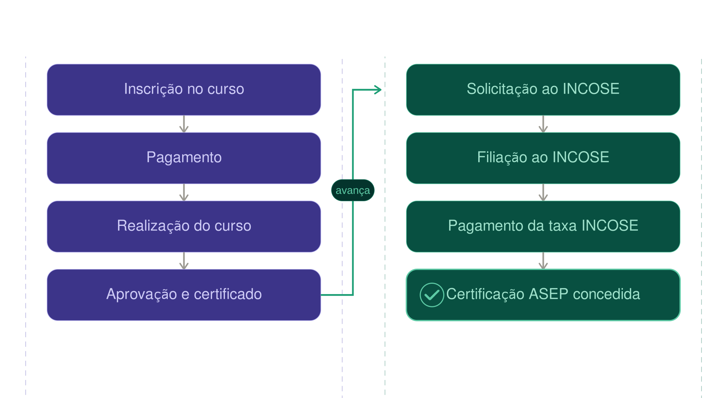

Reconhecimento Internacional
Conteúdo alinhado às principais referências globais utilizadas em Engenharia de Sistemas.
O curso de Engenharia de Sistemas da UFMG possui equivalência acadêmica ao exame global ASEP do INCOSE, permitindo que o participante aprovado seja dispensado da prova escrita no processo de certificação. No entanto, a conclusão do curso não concede automaticamente a certificação oficial.
O INCOSE (International Council on Systems Engineering)i> é a principal organização mundial dedicada ao desenvolvimento e à disseminação das melhores práticas em Engenharia de Sistemas. Fundado em 1990, o INCOSE reúne profissionais, pesquisadores e instituições de mais de 60 países, sendo responsável pelo programa de certificação ASEP/CSEP/ESEP, referência global na área.
A certificação ASEP (Associate Systems Engineering Professional)i> é a primeira credencial do programa de certificações do INCOSE. Ela comprova que o profissional domina os conceitos e processos fundamentais da Engenharia de Sistemas, conforme definidos no Systems Engineering Body of Knowledgei> (SEBoK) e no INCOSE Systems Engineering Handbooki>.
Profissionais certificados pelo INCOSE são valorizados em setores estratégicos como aeroespacial, defesa, automotivo, energia, saúde e tecnologia da informação, com reconhecimento em projetos de alcance internacional.

A UFMG tornou-se a primeira universidade de um país de língua não inglesa a obter equivalência ao exame global ASEP do INCOSE. Isso significa que o certificado de conclusão emitido pela UFMG é reconhecido internacionalmente como equivalente à aprovação no exame global de conhecimento — etapa necessária para solicitar a certificação ASEP.
A formalização desse reconhecimento foi possível em função da certificação da Prof.ª Ana Liddy Cenni de Castro Magalhães como ESEP (Expert Systems Engineering Professional), o nível mais alto de certificação do INCOSE, sendo ela a primeira acadêmica da América Latina a alcançar esse título.

A aprovação no curso não implica a concessão automática da certificação oficial do INCOSE.
O certificado da UFMG dispensa apenas o exame global de conhecimento.
Além da aprovação no exame de conhecimento (ou da equivalência obtida por meio do certificado da UFMG), o INCOSE exige que o candidato atenda a requisitos adicionais relacionados à formação e à atuação profissional. Cadastro ativo no portal do INCOSE, com pagamento da taxa de inscrição para se tornar membro ativo do INCOSE.

Como critérios e documentos podem sofrer atualizações, recomenda-se consultar diretamente as orientações oficiais no portal do INCOSE: incose.org.
Conteúdo alinhado às principais referências globais utilizadas em Engenharia de Sistemas.
O certificado da UFMG substitui a etapa do exame global de conhecimento exigido pelo INCOSE.
O participante ainda deve solicitar formalmente a certificação e cumprir os requisitos adicionais do INCOSE.
Reconhecimento valorizado em setores como aeroespacial, defesa, energia, saúde, automotivo e tecnologia.